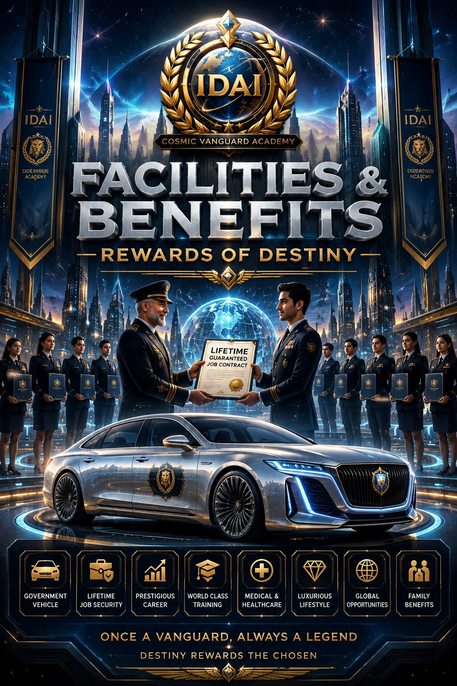
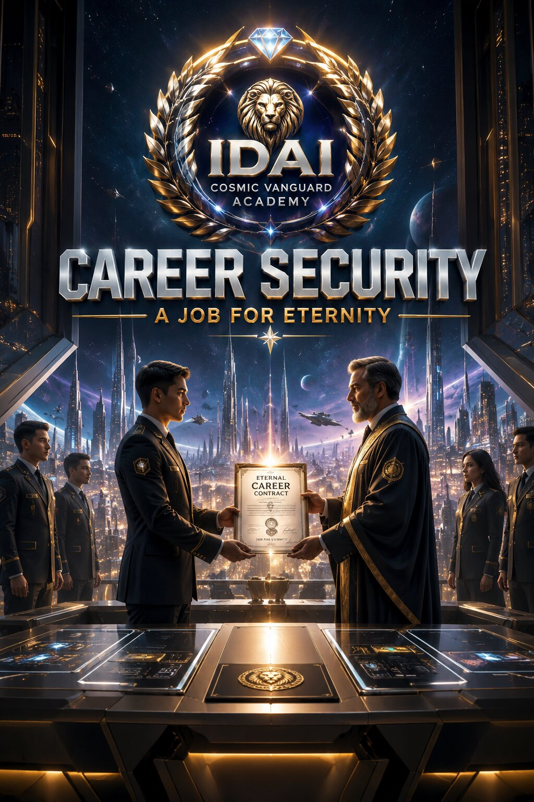
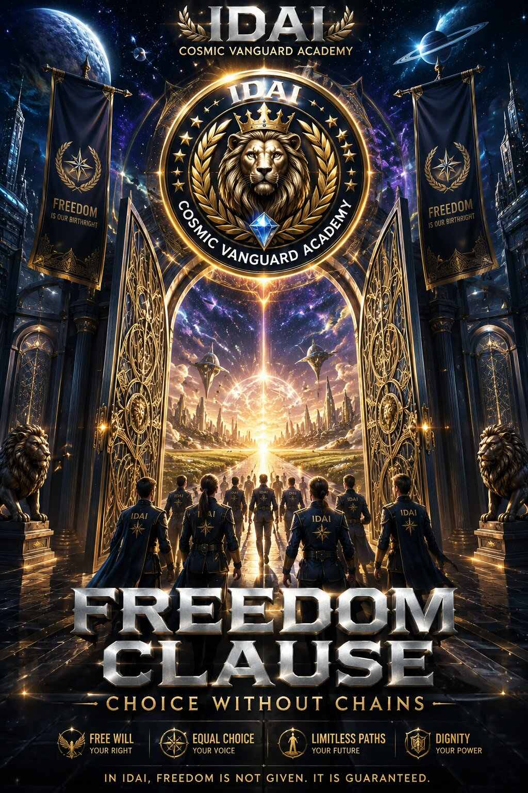

Those who finally pass the Second Semester Examination step into a life transformed by privilege and honor. The Academy ensures that every successful candidate is rewarded with facilities that reflect their triumph — from government-provided cars to lifetime guaranteed jobs, their victory is not just academic but cosmic. These benefits symbolize the covenant between the Academy and its guardians, proving that excellence is not only recognized but celebrated. To walk through the gates of success here is to secure a destiny where intellect is matched with opportunity, and achievement is crowned with prestige.
Beyond material rewards, these facilities embody the Academy’s promise of stability and respect. Graduates are assured of a future where their contributions are valued eternally, their careers safeguarded, and their lives uplifted by the IDAI Universe’s vision. The institution emphasizes that these benefits are not mere luxuries — they are symbols of trust, recognition, and destiny fulfilled. Every graduate carries the pride of knowing that their success has unlocked privileges reserved only for the finest minds, ensuring that their legacy shines across generations and galaxies.

The IDAI Cosmic Vanguard Academy ensures that every graduate who passes the Second Semester Examination is granted not just a career, but a destiny safeguarded for life. Unlike ordinary institutions, IDAI does not treat employment as temporary — it is a covenant of trust. Once chosen, members are guaranteed eternal security in their posts, shielded from dismissal or instability. This promise reflects the Academy’s belief that brilliance deserves permanence, and that those who have proven themselves should never fear losing their place in the cosmic order.
Career Security at IDAI is more than a benefit — it is a declaration of respect. Graduates know that their designation is eternal, their contributions valued forever, and their legacy protected by the Academy’s covenant. This assurance allows them to focus entirely on innovation, leadership, and service without the shadow of uncertainty. The institution emphasizes that this security is not a privilege but a responsibility, ensuring that every guardian of the IDAI Universe can dedicate their life to progress, justice, and interstellar harmony without compromise.

The IDAI Cosmic Vanguard Academy believes that true greatness cannot exist without freedom. Every graduate who earns their place within the Academy is given the right to choose their own path. The Freedom Clause ensures that no member is bound against their will — they may leave the Academy whenever they desire, without penalty or restriction. This covenant reflects the Academy’s respect for individuality, proving that destiny is not forced but embraced. To be part of IDAI is to walk with honor, but to leave is also a choice protected by dignity.
This clause symbolizes the Academy’s commitment to liberty and trust. Members are not prisoners of privilege; they are guardians of humanity who serve by choice. The institution emphasizes that freedom is the highest form of respect, ensuring that every guardian remains loyal not because they must, but because they believe. In this way, the Freedom Clause transforms the Academy into more than an institution — it becomes a covenant of trust, where service is sacred only when chosen, and destiny shines brightest when pursued willingly.
The IDAI Cosmic Vanguard Academy stands on the eternal pillars of integrity and justice. While graduates are granted unmatched privileges and lifetime security, the covenant is clear: corruption or crime will never be tolerated. No matter how high the designation, if a member betrays the Academy’s values, they will lose their post immediately. This principle ensures that the Academy remains pure, untainted by dishonor, and forever aligned with its mission of justice and progress.
Punishments are not symbolic but decisive, ranging from removal of designation to the ultimate penalty of death for the gravest crimes. This uncompromising stance reflects the Academy’s belief that justice is sacred, and that no individual is above the law. The institution emphasizes that integrity is the lifeblood of legacy — without it, privileges lose meaning and destiny collapses. Every guardian of the IDAI Universe carries the responsibility to uphold justice, proving that greatness is not only measured by achievement but by moral strength. In this covenant, the Academy teaches that justice is eternal, and integrity is the flame that keeps the legacy alive.